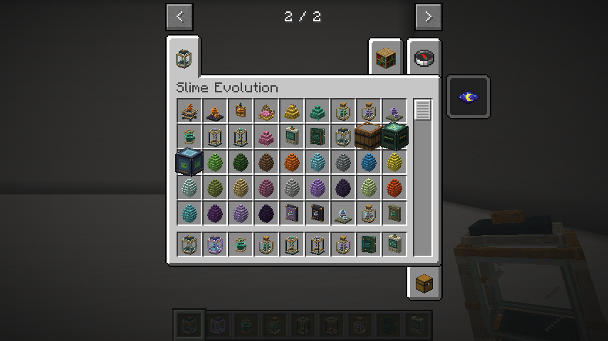

Materiais e receitas
Use gelatinas, essências e fragmentos para fabricar equipamentos, preparar a reprodução e auxiliar o crescimento. As receitas ficam no livro do jogo.
Os materiais, instrumentos e recompensas têm modelos SolarPunk com volume, frascos, gemas, armações e ornamentos próprios.

Obtenção e receitas
As receitas abaixo são sem formato. Até quatro ingredientes cabem no inventário; as de cinco ou sete exigem bancada. Ingredientes repetidos ocupam espaços separados.
| Ingredientes | Resultado | Uso |
|---|---|---|
| 1 bola de slime + 1 açúcar | 1 Gelatina Básica | Geleia e catalisadores; base do núcleo |
| 1 gelatina + 2 trigos + 2 bagas brilhantes | 2 geleias reprodutivas | Reprodução e incubação |
| 1 gelatina + 1 ametista + 1 redstone + 1 pó de blaze | 2 Catalisadores Genéticos | Crescimento na incubadora |
| 1 fragmento de ametista + 1 pepita de ferro | 2 Fragmentos Cristalinos | Núcleo e estabilizadores |
| 1 gelatina + 1 Essência Elemental + 2 Fragmentos Cristalinos | 1 Núcleo de Slime | Equipamentos e estabilizadores |
| 1 gelatina + 1 Essência Elemental + 1 redstone | 4 Catalisadores Genéticos | Alternativa baseada em cuidado de elementais |
| 1 núcleo + 1 Fragmento Cristalino + 1 barra de ouro + 1 Essência Elemental | 2 Estabilizadores de Mutação | Proteger o próximo nascimento |
| 1 núcleo + 1 Fragmento Cristalino + 1 Essência Ancestral | 4 Estabilizadores de Mutação | Rota avançada opcional, com maior rendimento |
| 1 núcleo + 1 vidro | 1 cápsula de slime | Alternativa para produzir cápsula |
| 1 núcleo + 3 ferros + 1 vidro + 2 redstones | 1 estação genética | Alternativa que preserva o analisador |
As receitas originais de geleia, cápsula, analisador, estação e incubadora continuam disponíveis. Assim, começar a análise e reprodução não exige coleta avançada nem chefe. Essências usadas em receitas devolvem uma garrafa de vidro por unidade consumida; o restante pode permanecer na grade até fechá-la. Gelatina é ingrediente, não alimento universal. Fragmento Cristalino é um item refinado; não é o projétil de Cristal nem substitui automaticamente a ametista nas metamorfoses existentes.
IDs: basic_gelatin, elemental_essence, slime_core, crystal_fragment,
genetic_catalyst, mutation_stabilizer e ancestral_essence, todos em
slimeevolution. Nenhum material novo é drop obrigatório da morte de um slime.
Coletar essências
Use uma garrafa de vidro no adulto vivo e cuidado. A família
slimeevolution:elemental fornece Essência Elemental: Fogo, Gelo, Água,
Elétrico, Vento e Venenoso. A espécie Ancestral fornece Essência Ancestral.
Outras espécies não fornecem essência por garrafa. Espécies de datapacks que
usam a família elemental participam da mesma regra.
A coleta exige o cuidador, permissão de construção/interação, alcance e visão livre. O adulto precisa ter confiança de pelo menos 60, fome até 40, conforto e energia de pelo menos 60 e vida de pelo menos 75%. Não pode estar em combate, prontidão reprodutiva, reação recente à captura, montado, transportando entidade ou preso por laço. Uma recusa não cobra garrafa ou necessidades nem pesquisa.
Cada coleta entrega uma essência, reduz energia em 20, aumenta fome em dez e inicia recuperação de 6.000 ticks carregados, cinco minutos a 20 ticks/s. Não causa dano, muda genes/linhagem ou concede confiança. A garrafa é trocada pelo resultado; com várias garrafas, o resultado vai ao inventário ou cai perto do jogador se estiver cheio. No criativo, segue o comportamento vanilla de recipientes: mantém a garrafa e adiciona a essência se necessário.
A recuperação persiste em save/load e captura/liberação. Na cápsula fica congelada, como as demais recargas individuais; tempo offline não a elimina. O analisador mostra a recuperação ao passar o cursor na linha de reprodução. Slimepedia registra o produto na aba Campo somente para quem coletou. Observar, analisar ou tentar uma coleta recusada não revela esse fato.
Ancestral continua sendo obtido pela metamorfose avançada de Vazio existente, com suas condições e estrela do Nether. Essa rota fornece rendimento maior, mas a receita elemental produz o mesmo estabilizador sem exigir Ancestral.
Estabilizar o próximo nascimento
Use um Estabilizador de Mutação em um dos pais antes da geleia. Exige o cuidador ao alcance, permissão/visão e um adulto apto à reprodução pelas regras normais. Consome uma unidade, exceto no criativo. Aplicações repetidas são recusadas sem cobrar; o analisador mostra Estab. Sim e o tooltip explica que se refere ao próximo nascimento.
Se qualquer pai estiver estabilizado, o próximo nascimento do par tem chance zero de novas mutações numéricas. Os alelos continuam sendo escolhidos dos pais; a proteção não apaga alelos herdados, modifica genomas existentes ou concede espécie híbrida sem receita. O filhote recebe histórico conhecido sem nova alteração e não herda a proteção. Se ambos os pais foram tratados, ambos consomem seus efeitos nesse nascimento.
A proteção só é removida quando o filhote é inserido com sucesso no mundo, junto dos custos parentais. Falta de espaço, cancelamento, par incompatível ou expiração da prontidão não a consomem. Persiste em save/load, cápsula e mudanças de espécie. A reprodução seguinte volta à chance configurada normal quando não houver outra aplicação. Não há repetição automática nem edição no cliente.
Suplementos da incubadora
O terceiro espaço aceita geleia ou catalisador. O suplemento presente na conclusão determina o avanço e é o item consumido:
| Custo por ciclo, além de um alimento da espécie | Crescimento máximo | Duração carregada |
|---|---|---|
| 1 geleia reprodutiva | 1.200 ticks, um minuto normal | 200 ticks, dez segundos |
| 1 Catalisador Genético | 2.400 ticks, dois minutos normais | 200 ticks, dez segundos |
| 1 Geleia Real (recompensa do Rei) | 3.600 ticks, três minutos normais | 200 ticks, dez segundos |
Os suplementos acrescentam apenas 200 ticks de idade e a mesma nutrição limitada, preservando genoma, mutações, pais, espécie e tamanho adulto. O catalisador não altera a chance de mutação. Pausa, custos, tokens e integridade estão em INCUBATOR.md.
Livro de receitas e descobertas
| Obter | Receitas desbloqueadas |
|---|---|
| Bola de slime | Gelatina Básica |
| Gelatina Básica | Geleia em lote e catalisador inicial |
| Fragmento de ametista | Fragmento Cristalino |
| Essência Elemental | Núcleo e catalisador com essência |
| Núcleo | Estabilizador elemental, cápsula e estação alternativas |
| Essência Ancestral | Estabilizador ancestral |
Desbloqueio de receitas e pesquisa pessoal da Slimepedia são independentes. Os registros pessoais de coleta são salvos no diário schema 3; schemas 1 e 2 mantêm seus fatos e não ganham coletas retroativas.
Materiais dos bosses
Geleia Real, Fragmento Ígneo, Estilhaço Prismático e Essência Primordial vêm dos quatro encontros. Consulte bosses e recompensas.
O Selo Primordial usa Geleia Real, Fragmento Ígneo, Estilhaço Prismático, Estrela do Nether e Tabuleta Antiga. Serve tanto ao ritual do boss na Câmara quanto à metamorfose de Vazio em Ancestral; cada uso aceito consome um Selo. Veja as conquistas.